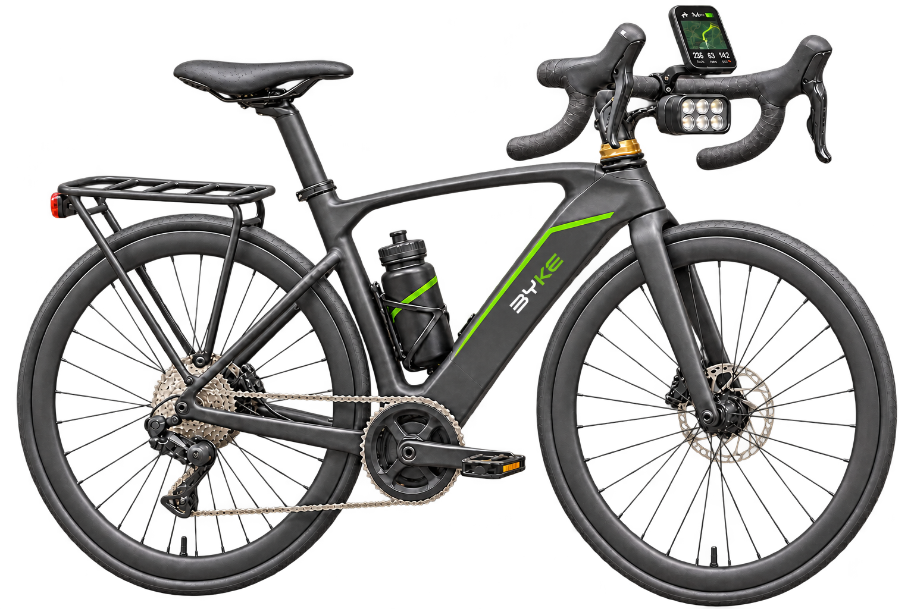

BICICLETAS ELÉTRICAS POR ASSINATURA
Sua próxima bike, por assinatura.
Escolha uma BYKE para fazer parte da sua rotina.

Uma BYKE à disposição, em casa.Planos de 3, 6 ou 12 meses. Pagamento mensal.
BYKE · ESPORTIVA
Marlim
Guidão curvo e posição esportiva para os trajetos no asfalto.

BYKE · URBANA
Tuna
Quadro baixo, cesta e conforto para os deslocamentos do dia a dia.

BYKE · CROSS
Wale
Pneus largos e suspensão dupla para explorar caminhos irregulares.

A BYKE é uma proposta de aluguel de bicicletas elétricas por assinatura. Você escolhe entre Marlim, Tuna e Wale e define um prazo trimestral, semestral ou anual, com pagamento mensal.
Conheça os modelos
Compare a posição de pedalada, a autonomia estimada e o tipo de percurso de cada bicicleta.
Escolha o prazo
Veja as mensalidades para 3, 6 ou 12 meses e encontre a opção para sua rotina.
Simule a assinatura
Confira o modelo, a duração e o valor mensal no simulador. Este protótipo não realiza contratação.
SOBRE A BYKE
Build Your Keen Energy.
A BYKE nasceu da ideia de ter uma bicicleta elétrica à disposição em casa, para os trajetos que ligam você à cidade. Um projeto de mobilidade urbana que aproxima a bicicleta da rotina.